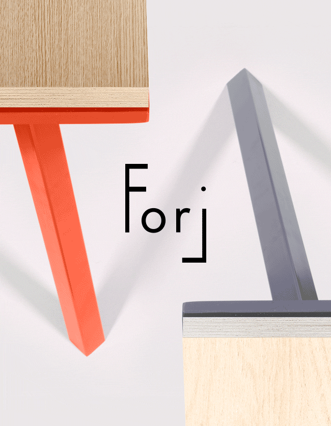

Utiliser l'interface de création de table sur-mesure
Nous avons créer une interface intuitive adaptée à la création sur-mesure pour vous permettre de faire de nombreux choix comme les longueurs, largeurs et hauteurs, ainsi que le choix des couleurs et du type de plateau. Tous ces paramettre permettent de créer une infinité de tables sur-mesure forj. Avec les plateau et le cadre complètement modulables, pous pourrez créer une table basse, une table haute, une table de barre ou bien un banc.
L’option du plateau en acier et du traitement époxy vous permettent de créer une table sur-mesure d’extérieur, résistants aux saisons.
Construire ma table

Les tables se décomposent en plusieurs bois, et plusieurs couleurs.